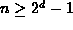

Data Structures and Algorithms
with Object-Oriented Design Patterns in Java
Data Structures and Algorithms
with Object-Oriented Design Patterns in JavaA leftist tree is a tree which tends to ``lean'' to the left. The tendency to lean to the left is defined in terms of the shortest path from the root to an external node. In a leftist tree, the shortest path to an external node is always found on the right.
Every node in binary tree has associated with it a quantity called its null path length which is defined as follows:
Definition (Null Path and Null Path Length)Consider an arbitrary node x in some binary tree T. The null path of node x is the shortest path in T from x to an external node of T.
The null path length of node x is the length of its null path.
Sometimes it is convenient to talk about the null path length of an entire tree rather than of a node:
Definition (Null Path Length of a Tree)The null path length of an empty tree is zero and the null path length of a non-empty binary tree is the null path length its root R.
When a new node or subtree is attached to a given tree,
it is usually attached in place of an external node.
Since the null path length of a tree is the length of the shortest path
from the root of the tree to an external node,
the null path length gives a lower bound on the cost of insertion.
For example, the running time for insertion in a binary search tree,
Program  , is at least
, is at least
where d is the null path length of the tree.
A leftist tree is a tree in which the shortest path to an external node is always on the right. This informal idea is defined more precisely in terms of the null path lengths as follows:
Definition (Leftist Tree) A leftist tree is a binary tree T with the following properties:
- Either
; or
- , where both
and
are leftist trees which have null path lengths
and , respectively, such that
Figure shows an example of a leftist heap.
A leftist heap is simply a heap-ordered leftist tree.
The external depth of the node is shown to the right of each node
in Figure .
The figure clearly shows that it is not necessarily the case in a leftist tree
that the number of nodes to the left of a given node is greater than
the number to the right.
However, it is always the case that the null path length on the left
is greater than or equal to the null path length on the right
for every node in the tree.
The reason for our interest in leftist trees is illustrated by the following theorems:
Theorem Consider a leftist tree T which contains n internal nodes. The path leading from the root of T downwards to the rightmost external node contains at most nodes.
extbfProof Assume that T has null path length d. Then T must contain at least leaves. Otherwise, there would be a shorter path than d from the root of T to an external node.
A binary tree with exactly l leaves has exactly l-1 non-leaf internal nodes. Since T has at least leaves, it must contain at least  internal nodes altogether. Therefore, .
Since T is a leftist tree, the shortest path to an external node must be the path on the right. Thus, the length of the path to the rightmost external is at most .
There is an interesting dichotomy between AVL balanced trees and leftist trees.
The shape of an AVL tree satisfies the AVL balance condition
which stipulates that the difference in the heights of the left and
right subtrees of every node may differ by at most one.
The effect of AVL balancing is to ensure that
the height of the tree is  .
.
On the other hand, leftist trees have an ``imbalance condition''
which requires the null path length of the left subtree to be greater than
or equal to that of the right subtree.
The effect of the condition is to ensure that
the length of the right path in a leftist tree is  .
Therefore, by devising algorithms for manipulating leftist heaps
which only follow the right path of the heap,
we can achieve running times which are logarithmic in the number of nodes.
.
Therefore, by devising algorithms for manipulating leftist heaps
which only follow the right path of the heap,
we can achieve running times which are logarithmic in the number of nodes.
The dichotomy also extends to the structure of the algorithms. For example, an imbalance sometimes results from an insertion in an AVL tree. The imbalance is rectified by doing rotations. Similarly, an insertion into a leftist tree may result in a violation of the ``imbalance condition.'' That is, the null path length of the right subtree of a node my become greater than that of the left subtree. Fortunately, it is possible to restore the proper condition simply by swapping the left and right subtrees of that node.
 Copyright © 1998 by Bruno R. Preiss, P.Eng. All rights reserved.
Copyright © 1998 by Bruno R. Preiss, P.Eng. All rights reserved.